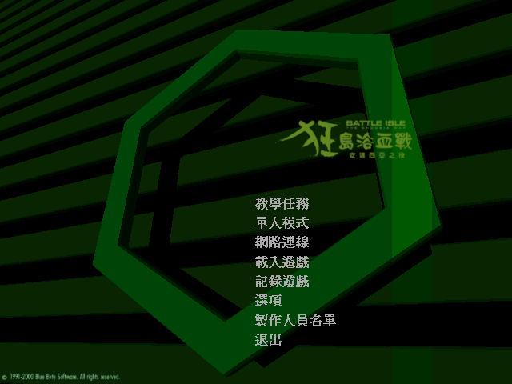
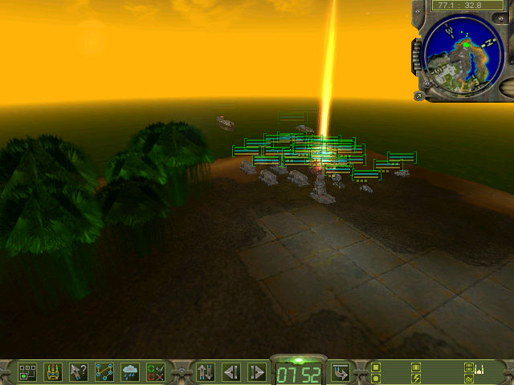

名稱：狂島浴血戰：安道西亞之役／戰島：安多西亞戰爭 (Battle Isle: The Andosia War，中文版)
簡介：Cauldron 2000年出品的即時戰術遊戲，由Blue Byte代理發行，台灣由第三波中文化
並代理發行 [待補]。


保護：光碟SafeDisc 2.30
備註：VirtualBox無法正常執行，虛擬機請使用VMware。
備註：遊戲若持續出現找不到3D加速卡的訊息，請刪除cr_cache.bin後再執行一次。
檔案：nocd.rar = 免光碟檔